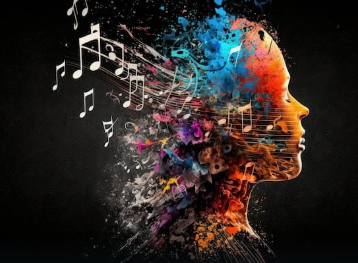

A perfect song
A song is a voice played by singers with a conbination of many musical instruments. Song can be called as our partner in our celeberations , excitements and in each and every joy and sorrows of our life. Song is a voice which heals all through ouyr problems. Listening to songs is also a hobby for many people. Song is composed of beautiful lyrics , different lines sung by different singers in different pitches , different lines are played at different instruments at different nodes to make it a complete song.
What is meant by a perfect song?
A perfect song is something which touches to someone's heart. The song directly connects with the soul, the song connects with their past experiences, the song connects with their life that the lyrics is going so deep into their heart. The lyrics of the the song is composed as it is something the listener needs to listen, it attracts the listener to listen it again and again. The tone by which it is been sung by the singer is very important to have a perfect song, the coordination of the voice with the musical instruments, the different nodes of the instruments which can make the song even better.
Different art forms of song are as follows-
- Pop - Pop songs are all about uplifting rhythms and catchy melodies. The lyrics used in pop music are usually not that hard to understand and remember, making pop songs easy to sing along to.
- Classical - Simple diatonic harmony, contrasting moods, and balanced melodies are a few of the features of classical music. This genre is also characterized by homophonic texture and a focus on elegance.
- Hip-Hop and Rap - Hip-hop or rap music has distinctive rhythmic beats that are more defined on the bass line. The vocals are the star of the show here. Rappers sing at a fast tempo and deviate from the beat by a good margin.
- EDM (Electronic Dance Music) - Electronic Dance Music is mostly played in clubs. Its repetitive and uplifting beat makes it easy to dance to. This type of song is characterized by a four-beat measure kick or bass drum, followed by a bass drop or “the downbeat”.
- Country - Country music combines the cowboy music of the west with the folk music of the southeast. The genre is usually played on classical instruments, particularly those with strings. Country songs are characterized by simple lyrics and melancholy ballads, with themes that revolve around hard life, loneliness, and love.
- Metal - Metal music is characterized by heavy sounds and the domination of electric and bass guitars. However, metal music has a faster tempo than classic rock and is generally more aggressive, with deeper sounds and higher distortions. Heavy metal songs also use dark themes that revolve around war, death, fear, and sadness.
- Gospel - Gospel music is one of the few music genres that are tied up to a particular religion, which is Christianity in this case. One prominent feature that makes gospel music what it is the overpowering Christian vocals. It also incorporates complex rhythms, harmony, and distinctive call and response patterns.
- Folk - Folk is a term used to describe traditional music originating from a specific region among local people in non-professional settings. It’s closely tied to geography, and people who sing their own folk music take great pride in it. However, since folk music varies greatly across cultures, there’s no specific way to describe how it sounds. Folk songs are often about national identity, patriotism, and culture.
- Jazz - Jazz music is defined by syncopated rhythms, polyphonic ensemble playing, bent notes, improvisation, unique voices, and pitch and timbre distortions. It’s widely believed that listening to jazz music has a relaxing effect and can affect your brain positively.
- Ballads - Ballads are songs that tell a story one way or another. They typically have a slow tempo and are full of emotions. This type of song isn’t tied to a particular genre; a ballad can be a pop, rock, or hip-hop song.
- But, the main point is irrespective of different forms of music, each musical form is unique in it's own existence and is respected by everyone. every individual get's connected to different art forms of music. Each and every person has it's own choice of music.
How retro songs affect me.

Retro songs plays a major role in my life. Irrespective of which singer is singing , it affects me by the most meaningful lyrics ever. While listening to retro songs it personally tells me the meanings of life. I personally notice that there is very low background voice in retro songs and that too with old instruments like violin , tabla , trumpet , flute and many more. Low background voice makes me a better listener to capture the beauty of the instruments, it makes me a better listener towards the voice of the singer , the lyrics of the song and to get know the importance and relatibility of those songs in today's life. Listening to old songs helps me in understanding the true meaning of life.